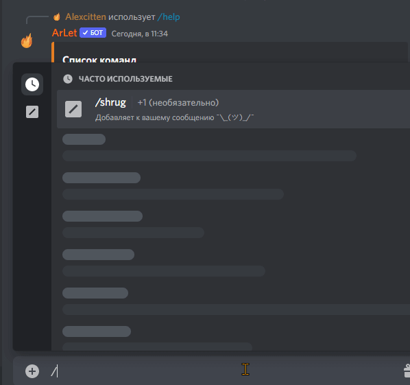
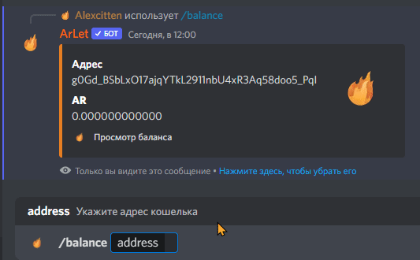
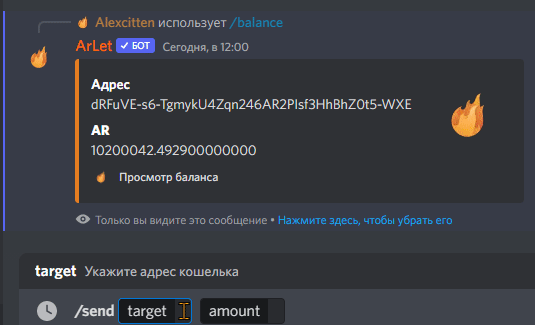

ArLet
Первый крипто-бот СНГ в Discord
Бот подразумевает взаимодействие с криптовалютами, создание крипто-кошельков, и транзакции в Discord.
На данный момент, бот в разработке. Всё в планах! Развиваемся!
Так же в планах взаимодействия с OpenSea API; криптовалютная электронная коммерция: покупка, продажа и торги любым крипто-товаром.
Вы можете легко создать собственный рынок для ваших невзаимозаменяемых токенов или NFT.
Просмотр статистик о многих криптовалют, доступ к метрикам в реальном времени, включая рыночную цену, процентные изменения, и много других статистик.
Список команд
╭ Взаимодействия с криптовалютой arweave
❯ /createwallet - Создать AR-кошелек
❯ /balance - Просмотр баланса кошелька
❯ /send - Отправить криптовалюту
╭ Базовые команды
❯ /help - Список команд
❯ /botinfo - Информация о боте
❯ /invite - Полезные ссылки
❯ /ping - Пинг бота
Документация
/createwallet
Команда /createwallet создаёт крипто-кошелёк с криптовалютой arweave. Бот Вам вышлет файл с ключом в сообщении и в личные сообщения.
/balance
Команда /balance позволяет просмотреть баланс AR на кошельке благодаря адресу
/send
Команда /send позволяет переводить криптовалюту AR, каждая транзакция это объем данных, фиксирующая в блоквейве. Бот Вам вышлет файл с транзакцией в сообщении и в личные сообщения.